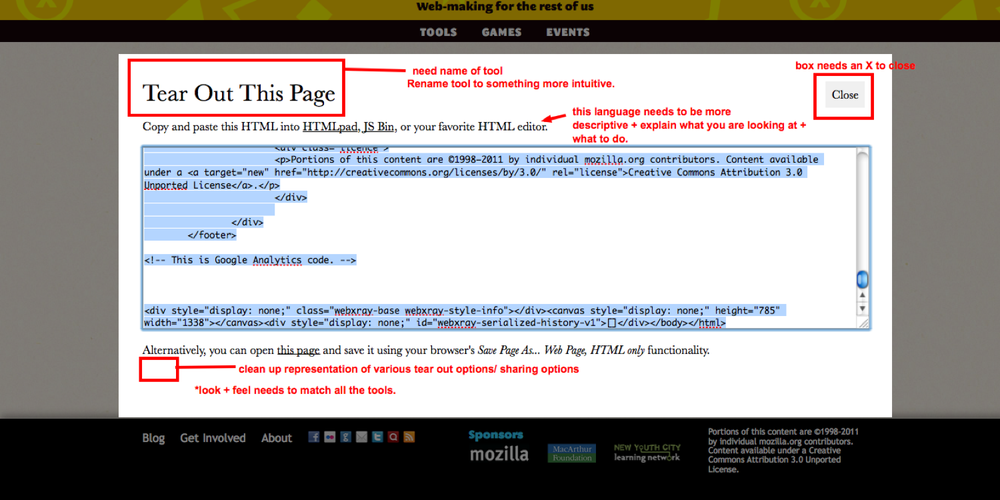

Good design should support learning through making
Hackasaurus
Try it
Watch demo
“I’m proud of this project because it impacted the way that
out-of-school programs approach coding.
”
Challenge
It’s difficult to ask teens to go into sandbox environments to learn how to edit
the Web.
Engagement strategy
Run hack-jams with the New York and Chicago Public Libraries to user test how
might we design web development learning experiences that meet youth where
they are on the Web.
Design strategy
Help teens remix the websites that they regularly with a bookmarklet. Teach the educators who support youth hackers so that they can be involved in the learning activity.
Solution
We designed a bookmarklet and curriculum to make it easy for anyone
to uncover and mess around with the building blocks that make up the web—
empowering them to move from digital consumer. The X-Ray Goggles bookmarklet helps you to look under the hood of a website and then remix the code.
Process
This project was conceived of, designed, and, implemented with Atul Varma.
during our time at Mozilla. We worked very closely with radical librarians in New York and Chicago initially, and this morphed into a huge international collaboration with educators and youth from Newark to Nairobi. We worked iteratively, testing and tweaking the tools and updating (and localizing) the curriculum.

The bookmarklet in action remixing an image.

This is an early mockup of the editor. Lot’s of mark up!